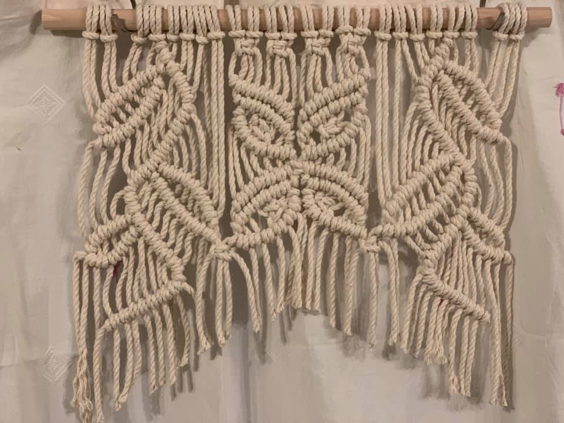
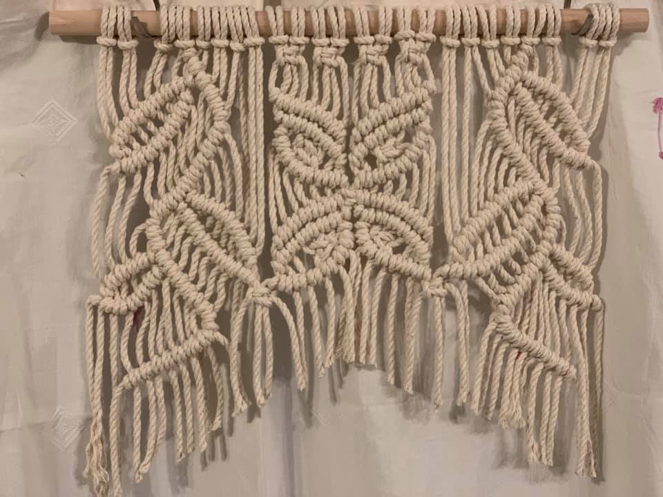

Décorations intérieur
Etagères
Accessoires
Bijoux
Suspensions pour plantes
Tentures
Etagères
Nos tenues macramés
Sacs
Bijoux
Nos fils macramés 



Une méthode de tissage très ancienne
Le macramé est une technique de tissage très ancienne utilisant les nœuds pour créer un tissu. Employant du fil, de la ficelle ou du cordon, le macramé peut être composé de nœuds plats ou en relief. Avec un peu de maîtrise et de patience, ce système de tissage permet de réaliser de très belles créations. Cette méthode de nouage remonte au 13ème siècle. Elle était très appréciée des marins qui réalisaient des objets en macramé durant leurs longs voyages en mer. Cet art ancestral aurait été apporté en Europe par les tisserands Arabes mais ses origines remontent sans doute à l’antiquité. Le macramé n’est donc pas un phénomène récent afficher Google
index
me contacter par mail me contacter par téléphoneTarifs Suspensions moyenne Ecru 80.00 euros Tentures moyenne Noire 65.00 euros Accessoires petit Rose 50.00 euros